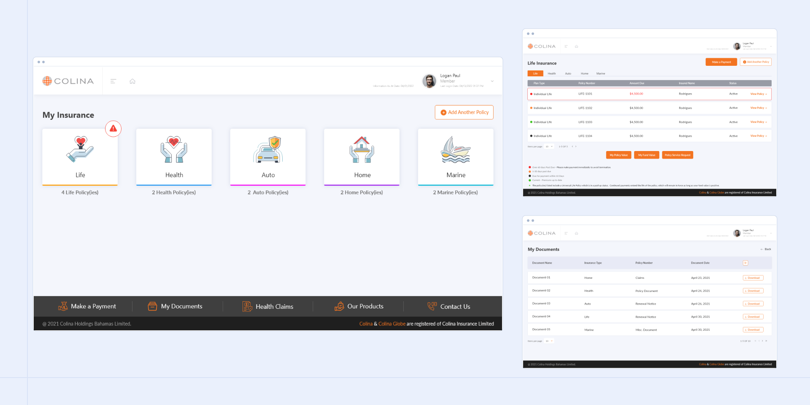

Bring customer identity, policy context and recent activity together.
Colina Customer Portal / UI & UX design
Policy information, organised around people.
A self-service portal concept for Colina customers across Life, Health, Auto, Home and Marine—designed to make policy information, claims, benefits and documents easier to find without forcing users to understand the insurer’s internal structure.

01 · Context
Customers think in questions, not product architecture.
A policyholder rarely arrives thinking “I need the Life module.” They arrive because they want to know what is covered, download a document, check a deductible or submit a claim. The design challenge was to make those everyday intentions easy to reach across several lines of business.
The portal therefore prioritizes recognizable tasks and a consistent account model over product-by-product fragmentation.
Make claims, documents, coverage and benefits easy to reach from the policy context.
Use the same interaction language across different insurance products.
02 · Design approach
Use familiar tasks as the bridge between different insurance products.
Group by customer intent
Organized the experience around policies, documents, claims, benefits and care rather than internal departments.
Keep policy context visible
Policy type, status, effective dates and covered members stay close to the action.
Reduce claims anxiety
Use clearer steps and status language around submission and tracking.
Design for reuse
Created repeatable layouts that can support multiple lines of business without redesigning each journey from scratch.
03 · Selected screens
From overview to policy detail and claims.
 View full screen ↗
View full screen ↗Insurance overview
A common entry point across insurance products.
 View full screen ↗
View full screen ↗Policy listing
Scan status, premium and policy information together.
 View full screen ↗
View full screen ↗Policy details
Move from the account overview into supporting detail.
 View full screen ↗
View full screen ↗Claims overview
Review claims and their current status.
 View full screen ↗
View full screen ↗Document access
Find policy documents in a dedicated workspace.
 View full screen ↗
View full screen ↗Report a claim
Guide customers through the information needed to submit a claim.
Explore 28 more project screens +
 View full screen ↗
View full screen ↗Add Existing Policy Page 2
Additional interface state from the supplied project screens.
 View full screen ↗
View full screen ↗Add Existing Policy Page
Additional interface state from the supplied project screens.
 View full screen ↗
View full screen ↗Contact Us
Additional interface state from the supplied project screens.
 View full screen ↗
View full screen ↗My Policy Values 1
Additional interface state from the supplied project screens.
 View full screen ↗
View full screen ↗My Policy Values
Additional interface state from the supplied project screens.
 View full screen ↗
View full screen ↗My Profile-on Pic Upload
Additional interface state from the supplied project screens.
 View full screen ↗
View full screen ↗Policy Detail page - Health Group Closed tab
Additional interface state from the supplied project screens.
 View full screen ↗
View full screen ↗Policy Detail page - Health Group popup
Additional interface state from the supplied project screens.
 View full screen ↗
View full screen ↗Policy Service Request - 1
Additional interface state from the supplied project screens.
 View full screen ↗
View full screen ↗Policy Service Request - 2 - Dividend Withdrawl
Additional interface state from the supplied project screens.
 View full screen ↗
View full screen ↗Policy Service Request - 2 - Policy Cancellation
Additional interface state from the supplied project screens.
 View full screen ↗
View full screen ↗Policy detail page - Auto Tab - Close
Additional interface state from the supplied project screens.
 View full screen ↗
View full screen ↗Policy detail page - Auto Tab - Open
Additional interface state from the supplied project screens.
 View full screen ↗
View full screen ↗Policy detail page - Health Individual Closed tab
Additional interface state from the supplied project screens.
 View full screen ↗
View full screen ↗Policy detail page - Health Individual Collapsed tab - Open 1
Additional interface state from the supplied project screens.
 View full screen ↗
View full screen ↗Policy detail page - Home Tab - Close
Additional interface state from the supplied project screens.
 View full screen ↗
View full screen ↗Policy detail page - Home Tab - Open Popup 1
Additional interface state from the supplied project screens.
 View full screen ↗
View full screen ↗Policy detail page - Marine Tab - Open Vessel detail hide
Additional interface state from the supplied project screens.
 View full screen ↗
View full screen ↗Policy detail page - Marine Tab - Open
Additional interface state from the supplied project screens.
 View full screen ↗
View full screen ↗Policy page - Marine 1
Additional interface state from the supplied project screens.
 View full screen ↗
View full screen ↗Report a Claim 1
Additional interface state from the supplied project screens.
 View full screen ↗
View full screen ↗Report a Claim 2
Additional interface state from the supplied project screens.
 View full screen ↗
View full screen ↗Request a Call
Additional interface state from the supplied project screens.
 View full screen ↗
View full screen ↗Sign In - 1
Additional interface state from the supplied project screens.
 View full screen ↗
View full screen ↗Sign Up - 1
Additional interface state from the supplied project screens.
 View full screen ↗
View full screen ↗Sign Up - 3 - code verification 1
Additional interface state from the supplied project screens.
 View full screen ↗
View full screen ↗Sign Up - terms
Additional interface state from the supplied project screens.
 View full screen ↗
View full screen ↗Terms & Condition
Additional interface state from the supplied project screens.
04 · Outcome
A more coherent self-service model across insurance lines.
Customers can move between products without learning a new interface each time.
Task-led navigation surfaces the actions policyholders use most often.
Visible policy context and clearer claims states reduce ambiguity.
These are intended experience outcomes; no unverified production metrics are presented.
Reflection
Insurance UX improves when the interface speaks the customer’s language.
The most useful design decision was not visual. It was reframing the information around what customers are trying to accomplish. Once that model became clearer, the screens became simpler too.
Back to UI/UX work →